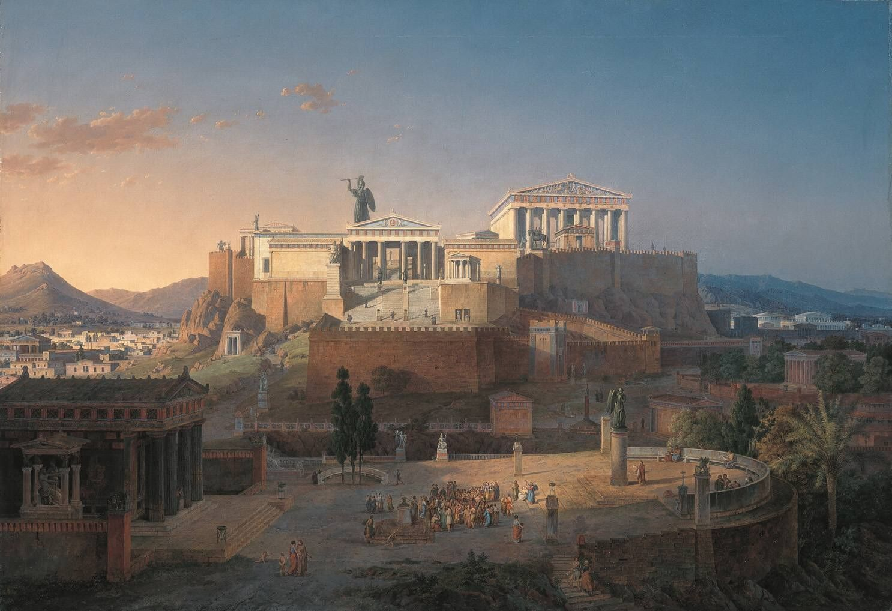

Athens was named according to the Greek mythology from competition that the goddess Athena had with Poseidon about who will become protector of the city. The myth says that Poseidon gave a spring with sea water whilst Athena offered an olive tree as she touched the ground of the sacred rock of the Acropolis. The people of Athens choose Athena as their protector and so the city was named after the goddess of wisdom. The myth is symbolic but the two Gods symbolising the strength of Athens as a city of wisdom and as a sea power. The first settlement of Athens 3000 BC was situated on the rock of Acropolis. According to the tradition, Athens was founded, when the king Theseus united in a state several settlements of Attica. The last king of ancient Athens was Kodros, who sacrificed his life in order to save the homeland. Later came to power the nobles (wealthy landowners). The nobles ruled Athens by their consul the Supreme Court (Arios Pagos), from this consul where elected the 9 rulers of Athens . During this time was existed the assembly of the Athenian citizens (Ecclesia of Demos) but during this period did’t had the power that had later with the lows of Solon. The main characteristics of Athens are quite different from those of Sparta, because despite the existence of laws and the state, the concept of the individual-citizen was important. The main concern of the legislators was to strengthen the national conscience and to protect the democratic state. At the same time, however, local freedom was encouraged and each municipality had the opportunity to decide on its local affairs, but the state intervened when it deemed it necessary. Each municipality sent its representatives to the city which was the cohesive web of the state. The national consciousness was strengthened with the creation of several festivities but also public works that increased the sense of pride of the inhabitants but also prevented social explosions, by employing to do those works the unemployed and the poor Athenians.https://www.athensguide.org/athens-history.html

In classical times, the owl was the emblem of the city of Athens. It was the sacred bird of the goddess Athena, the city's patron deity and the owl is a symbol of wisdom and prudence. According to Greek mythology, when goddess Athena, the goddess of wisdom, saw the creature for the first time, she was impressed by her big eyes and her solemn appearance, swiftly becoming her favorite bird and later an emblem of her.